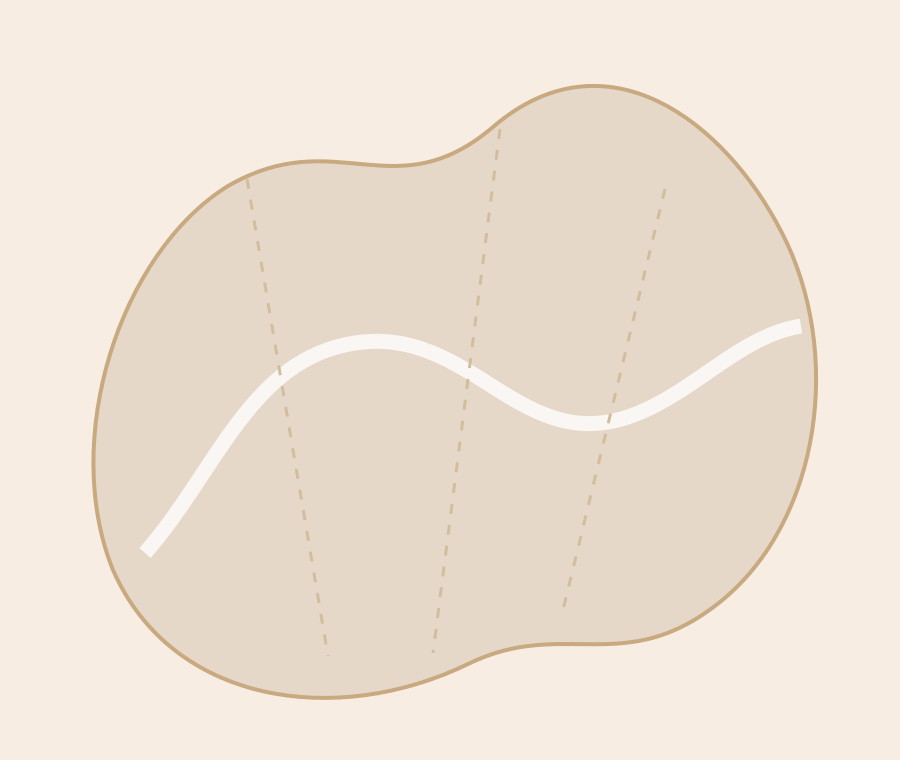
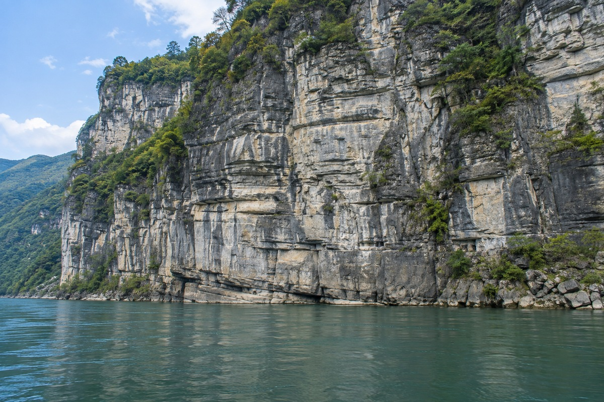
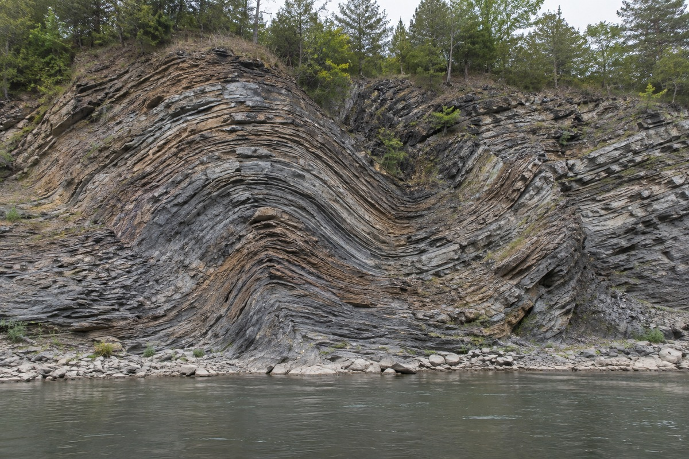
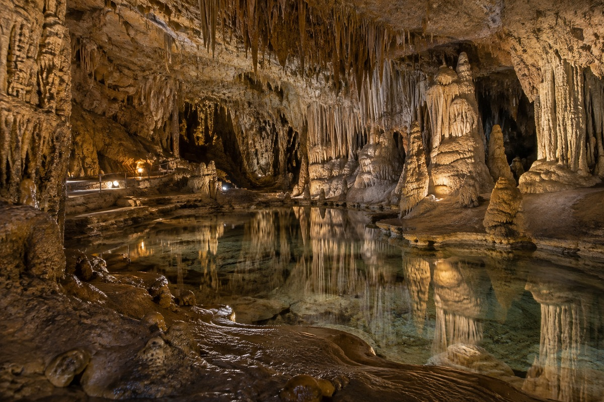
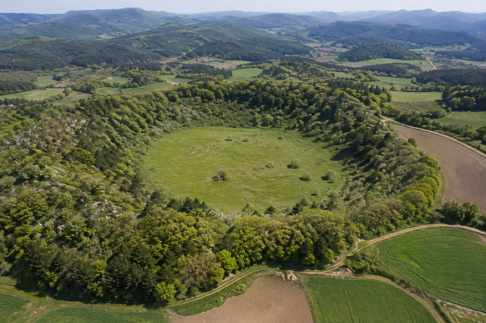
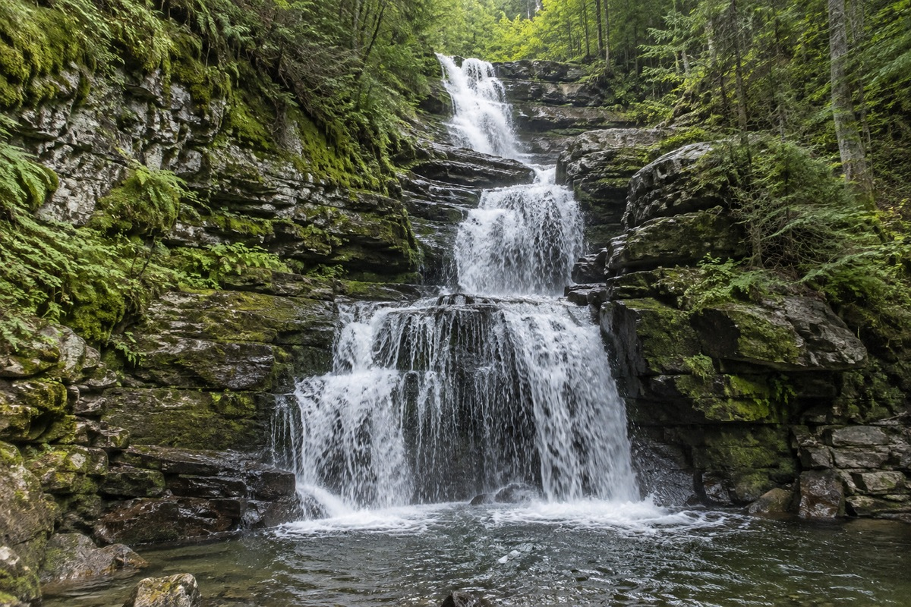
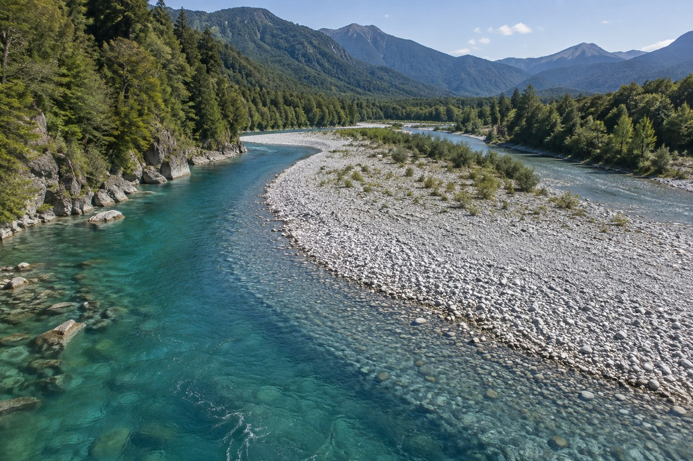
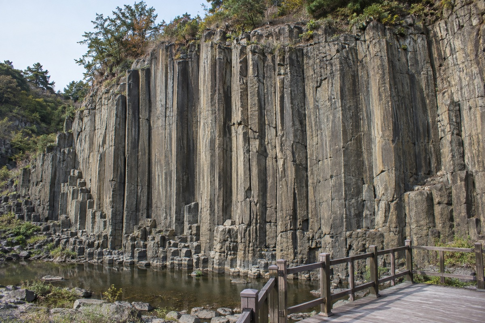
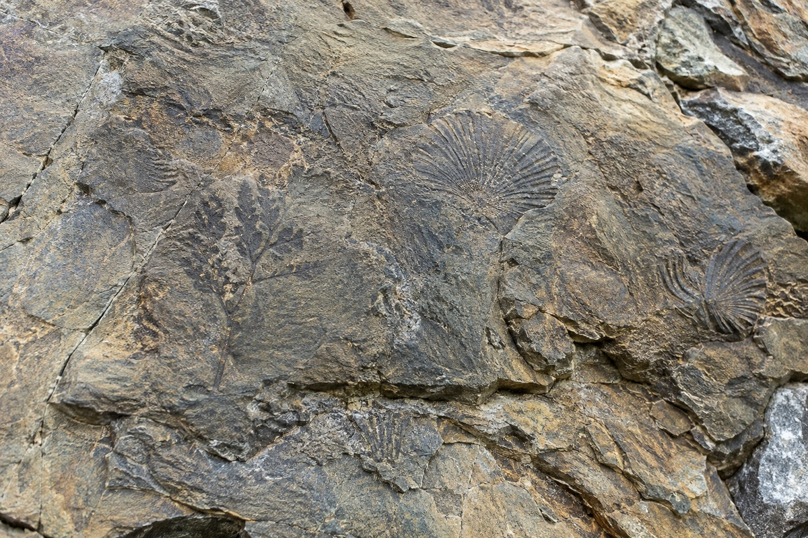

CHEONGRAM GEOPARK
지질명소

0101천동동굴
0303삼태산 경관
1010사평리 역암
0101영천동굴
0202노동동굴
0303산호화석
0404현천리 단층
0606에덴동굴
0808죽령단층
1313구낭굴
1515노동리 습곡
0101청람삼봉
0202푸른강 동굴
0303물빛계곡
0404별빛석굴
0505구름봉
0606은빛암
0707바람석문
0808상선암
0909중선암
1010하선암
1111소선암
1212하늘활공장
1313영춘북벽
1414구봉팔문
1515청람경관
1616고유적지
1717칠성암
관광명소
- 01청람삼봉
- 02푸른강 동굴
- 03물빛계곡
- 04별빛석굴
- 05구름봉
- 06은빛암
- 07바람석문
- 08상선암
- 09중선암
- 10하선암
- 11소선암
- 12하늘활공장
- 13영춘북벽
- 14구봉팔문
- 15청람경관
- 16고유적지
- 17칠성암
교육명소
- 01천동동굴
- 02다리안 편마암
- 03삼태산 경관
- 04여천리 카르스트
- 05매포 충상단층
- 06향산리 고지자기
- 07하리 대량절멸
- 08기촌 충상단층
- 09기촌리 슬음산
- 10사평리 역암
- 11노동리 반전습곡
학술명소
- 01영천동굴
- 02노동동굴
- 03산호화석
- 04현천리 단층
- 05대강 습곡구조
- 06에덴동굴
- 07노동리 충상단층
- 08죽령단층
- 09의풍 혼성편마암
- 10오사리 저어콘
- 11대전리 필석화석
- 12기동리 충상단층
- 13구낭굴
- 14파랑리 삼엽충
- 15노동리 습곡

GEO SITE 01
청람 수직절벽
청람의 지질 형성과정을 가까이에서 살펴볼 수 있는 대표 경관입니다.

GEO SITE 02
푸른강 습곡대
청람의 지질 형성과정을 가까이에서 살펴볼 수 있는 대표 경관입니다.

GEO SITE 03
별빛 석회동굴
청람의 지질 형성과정을 가까이에서 살펴볼 수 있는 대표 경관입니다.

GEO SITE 04
고원 돌리네
청람의 지질 형성과정을 가까이에서 살펴볼 수 있는 대표 경관입니다.

GEO SITE 05
삼층폭포
청람의 지질 형성과정을 가까이에서 살펴볼 수 있는 대표 경관입니다.

GEO SITE 06
은빛 자갈톱
청람의 지질 형성과정을 가까이에서 살펴볼 수 있는 대표 경관입니다.

GEO SITE 07
주상절리 전망대
청람의 지질 형성과정을 가까이에서 살펴볼 수 있는 대표 경관입니다.

GEO SITE 08
화석 관찰지
청람의 지질 형성과정을 가까이에서 살펴볼 수 있는 대표 경관입니다.